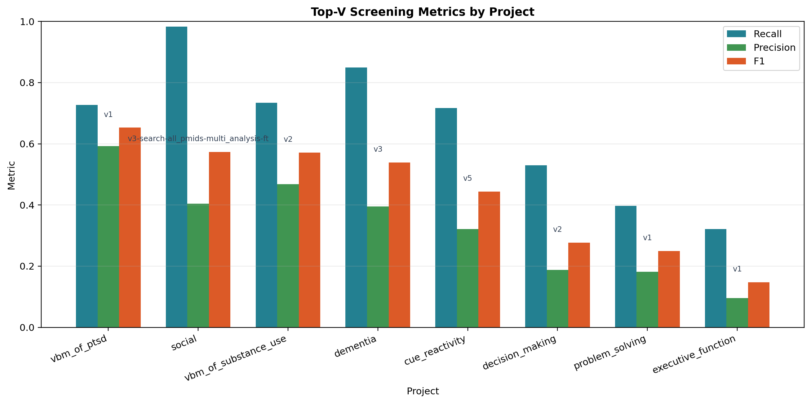
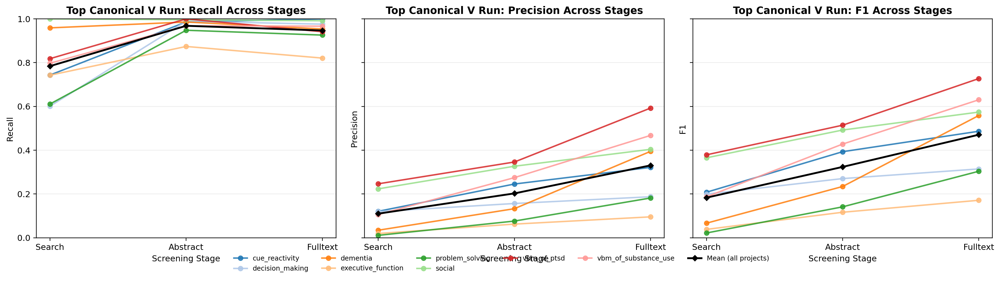
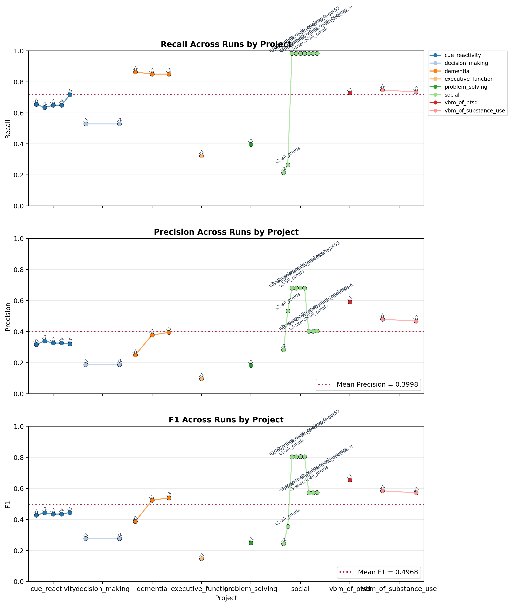
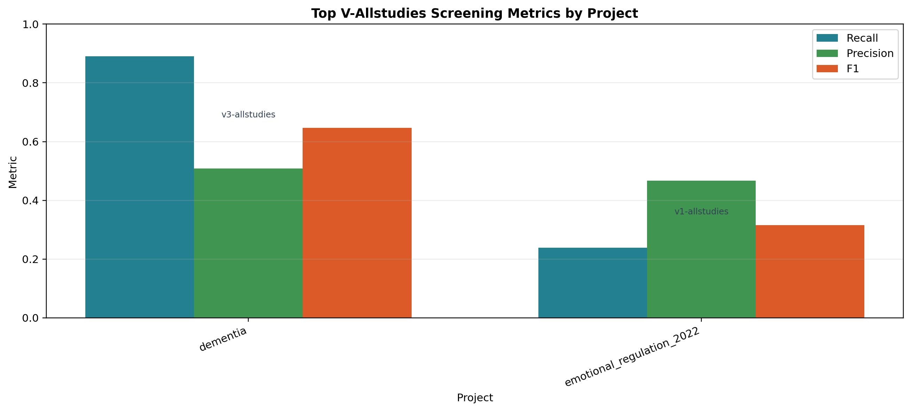
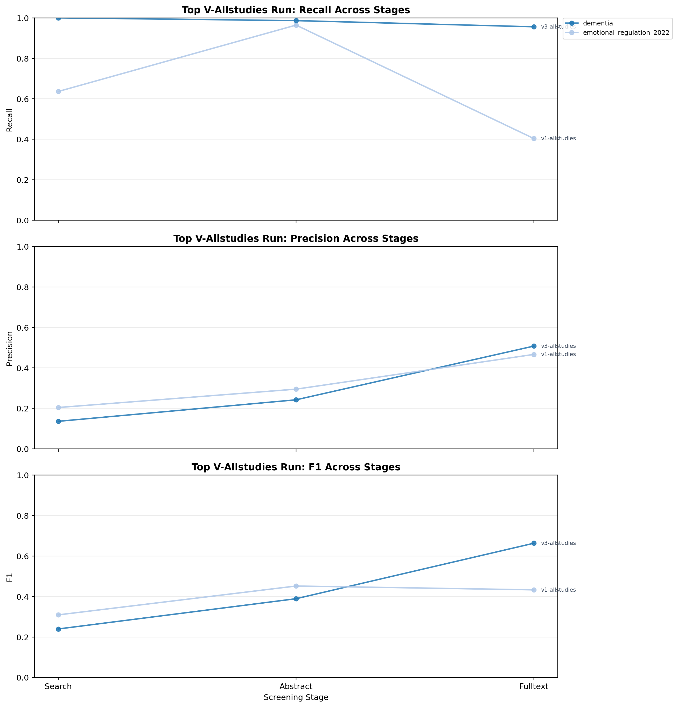
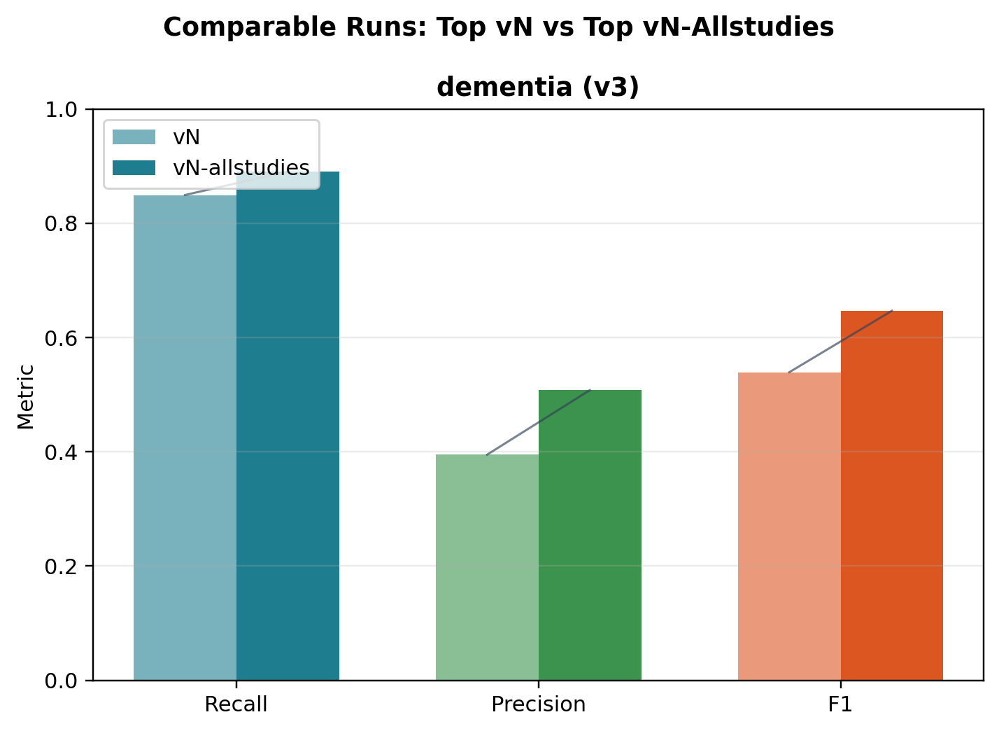

Generated at 2026-06-03T15:43:39.962168Z by re-running compare_screening_to_benchmark.py on all version runs except annotation-only runs. Includes top-per-project canonical vN runs and top-per-project vN-allstudies runs.
| Project | Run | V | Selection | Reason | Re-run | Code | Metric Stage | Recall | Precision | F1 | Top Canonical V | Top V-Allstudies | Log |
|---|---|---|---|---|---|---|---|---|---|---|---|---|---|
| cue_reactivity | v5 | 5 | selected | Eligible versioned run with screening artifacts. | success | 0 | fulltext | 0.7173 | 0.3216 | 0.4441 | yes | log | |
| decision_making | v2 | 2 | selected | Eligible versioned run with screening artifacts. | success | 0 | fulltext | 0.5294 | 0.1875 | 0.2769 | yes | log | |
| dementia | v3 | 3 | selected | Eligible versioned run with screening artifacts. | success | 0 | fulltext | 0.8493 | 0.3949 | 0.5391 | yes | log | |
| executive_function | v1 | 1 | selected | Eligible versioned run with screening artifacts. | success | 0 | fulltext | 0.3216 | 0.0957 | 0.1475 | yes | log | |
| problem_solving | v1 | 1 | selected | Eligible versioned run with screening artifacts. | success | 0 | fulltext | 0.3968 | 0.1818 | 0.2494 | yes | log | |
| social | v3-search-all_pmids-multi_analysis-ft | 3 | selected | Eligible versioned run with screening artifacts. | success | 0 | fulltext | 0.9832 | 0.4041 | 0.5728 | yes | log | |
| vbm_of_ptsd | v1 | 1 | selected | Eligible versioned run with screening artifacts. | success | 0 | fulltext | 0.7273 | 0.5926 | 0.6531 | yes | log | |
| vbm_of_substance_use | v2 | 2 | selected | Eligible versioned run with screening artifacts. | success | 0 | fulltext | 0.7342 | 0.4677 | 0.5714 | yes | log | |
| dementia | v3-allstudies | 3 | selected | Eligible versioned run with screening artifacts. | success | 0 | fulltext | 0.8904 | 0.5078 | 0.6468 | yes | log | |
| emotional_regulation_2022 | v1-allstudies | 1 | selected | Eligible versioned run with screening artifacts. | success | 0 | fulltext | 0.2386 | 0.4667 | 0.3158 | yes | log | |
| cue_reactivity | v1 | 1 | selected | Eligible versioned run with screening artifacts. | success | 0 | fulltext | 0.6545 | 0.3173 | 0.4274 | log | ||
| cue_reactivity | v2 | 2 | selected | Eligible versioned run with screening artifacts. | success | 0 | fulltext | 0.6335 | 0.3399 | 0.4424 | log | ||
| cue_reactivity | v3 | 3 | selected | Eligible versioned run with screening artifacts. | success | 0 | fulltext | 0.6492 | 0.3263 | 0.4343 | log | ||
| cue_reactivity | v4 | 4 | selected | Eligible versioned run with screening artifacts. | success | 0 | fulltext | 0.6492 | 0.3263 | 0.4343 | log | ||
| cue_reactivity | v5-annotation-only-gpt | 5 | skipped | Excluded annotation-only run. | skipped | ||||||||
| cue_reactivity | v5-recent | 5 | selected | Eligible versioned run with screening artifacts. | success | 0 | fulltext | 0.7277 | 0.2523 | 0.3747 | log | ||
| decision_making | v1 | 1 | selected | Eligible versioned run with screening artifacts. | success | 0 | fulltext | 0.5294 | 0.1875 | 0.2769 | log | ||
| decision_making | v2-annotation-only | 2 | skipped | Excluded annotation-only run. | skipped | ||||||||
| dementia | v1 | 1 | selected | Eligible versioned run with screening artifacts. | success | 0 | fulltext | 0.8630 | 0.2490 | 0.3865 | log | ||
| dementia | v1-allstudies | 1 | selected | Eligible versioned run with screening artifacts. | success | 0 | fulltext | 0.9041 | 0.4125 | 0.5665 | log | ||
| dementia | v2 | 2 | selected | Eligible versioned run with screening artifacts. | success | 0 | fulltext | 0.8493 | 0.3780 | 0.5232 | log | ||
| dementia | v2-allstudies | 2 | selected | Eligible versioned run with screening artifacts. | success | 0 | fulltext | 0.9041 | 0.5116 | 0.6535 | log | ||
| dementia | v2-annotation-only | 2 | skipped | Excluded annotation-only run. | skipped | ||||||||
| dementia | v2-annotation-only-abstract | 2 | skipped | Excluded annotation-only run. | skipped | ||||||||
| dementia | v3-annotation-only | 3 | skipped | Excluded annotation-only run. | skipped | ||||||||
| problem_solving | v1-annotation-only | 1 | skipped | Excluded annotation-only run. | skipped | ||||||||
| problem_solving | v2-annotation-only-gpt | 2 | skipped | Excluded annotation-only run. | skipped | ||||||||
| social | v1-annotation-only | 1 | skipped | Excluded annotation-only run. | skipped | ||||||||
| social | v1-annotation-only-gpt5 | 1 | skipped | Excluded annotation-only run. | skipped | ||||||||
| social | v1-annotation-only-lc | 1 | skipped | Excluded annotation-only run. | skipped | ||||||||
| social | v2 | 2 | selected | Eligible versioned run with screening artifacts. | success | 0 | fulltext | 0.2143 | 0.2833 | 0.2440 | log | ||
| social | v2-all_pmids | 2 | selected | Eligible versioned run with screening artifacts. | success | 0 | fulltext | 0.2647 | 0.5339 | 0.3539 | log | ||
| social | v2-annotation-only | 2 | skipped | Excluded annotation-only run. | skipped | ||||||||
| social | v3-all_pmids | 3 | selected | Eligible versioned run with screening artifacts. | success | 0 | fulltext | 0.9832 | 0.6802 | 0.8041 | log | ||
| social | v3-all_pmids-multi_analysis | 3 | selected | Eligible versioned run with screening artifacts. | success | 0 | fulltext | 0.9832 | 0.6802 | 0.8041 | log | ||
| social | v3-all_pmids-multi_analysis-ft | 3 | selected | Eligible versioned run with screening artifacts. | success | 0 | fulltext | 0.9832 | 0.6822 | 0.8055 | log | ||
| social | v3-all_pmids-multi_analysis-ft-gpt52 | 3 | selected | Eligible versioned run with screening artifacts. | success | 0 | fulltext | 0.9832 | 0.6802 | 0.8041 | log | ||
| social | v3-annotation-only | 3 | skipped | Excluded annotation-only run. | skipped | ||||||||
| social | v3-search-all_pmids | 3 | selected | Eligible versioned run with screening artifacts. | success | 0 | fulltext | 0.9832 | 0.4028 | 0.5714 | log | ||
| social | v3-search-all_pmids-multi_analysis | 3 | selected | Eligible versioned run with screening artifacts. | success | 0 | fulltext | 0.9832 | 0.4028 | 0.5714 | log | ||
| template_ | v1 | 1 | skipped | No screening artifacts found under outputs/ (search/abstract/fulltext/final). | skipped | ||||||||
| vbm_of_ptsd | v1-annotation-only | 1 | skipped | Excluded annotation-only run. | skipped | ||||||||
| vbm_of_ptsd | v1-recent | 1 | selected | Eligible versioned run with screening artifacts. | success | 0 | fulltext | 0.7273 | 0.4706 | 0.5714 | log | ||
| vbm_of_ptsd | v1-test | 1 | skipped | No screening artifacts found under outputs/ (search/abstract/fulltext/final). | skipped | ||||||||
| vbm_of_substance_use | v1 | 1 | selected | Eligible versioned run with screening artifacts. | success | 0 | fulltext | 0.7468 | 0.4797 | 0.5842 | log | ||
| vbm_of_substance_use | v2-annotation-only-gpt | 2 | skipped | Excluded annotation-only run. | skipped | ||||||||
| vbm_of_substance_use | v2-recent | 2 | selected | Eligible versioned run with screening artifacts. | success | 0 | fulltext | 0.7342 | 0.3412 | 0.4659 | log |
CSVs: run_selection.csv, screening_metrics_by_run.csv, screening_metrics_top_v.csv, screening_metrics_top_v_stage_progression.csv, screening_metrics_top_v_allstudies.csv, screening_metrics_top_v_allstudies_stage_progression.csv, screening_metrics_top_v_vs_top_v_allstudies_pairs.csv






cue_reactivity/v5-annotation-only-gpt: Excluded annotation-only run.decision_making/v2-annotation-only: Excluded annotation-only run.dementia/v2-annotation-only: Excluded annotation-only run.dementia/v2-annotation-only-abstract: Excluded annotation-only run.dementia/v3-annotation-only: Excluded annotation-only run.problem_solving/v1-annotation-only: Excluded annotation-only run.problem_solving/v2-annotation-only-gpt: Excluded annotation-only run.social/v1-annotation-only: Excluded annotation-only run.social/v1-annotation-only-gpt5: Excluded annotation-only run.social/v1-annotation-only-lc: Excluded annotation-only run.social/v2-annotation-only: Excluded annotation-only run.social/v3-annotation-only: Excluded annotation-only run.template_/v1: No screening artifacts found under outputs/ (search/abstract/fulltext/final).vbm_of_ptsd/v1-annotation-only: Excluded annotation-only run.vbm_of_ptsd/v1-test: No screening artifacts found under outputs/ (search/abstract/fulltext/final).vbm_of_substance_use/v2-annotation-only-gpt: Excluded annotation-only run.None.